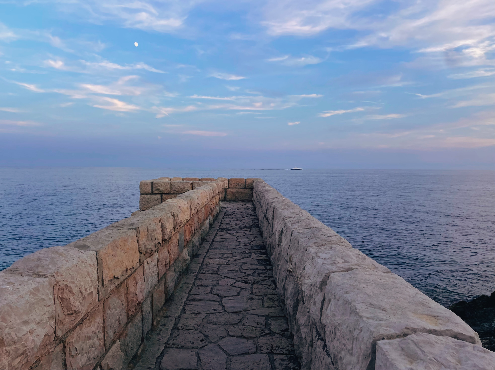
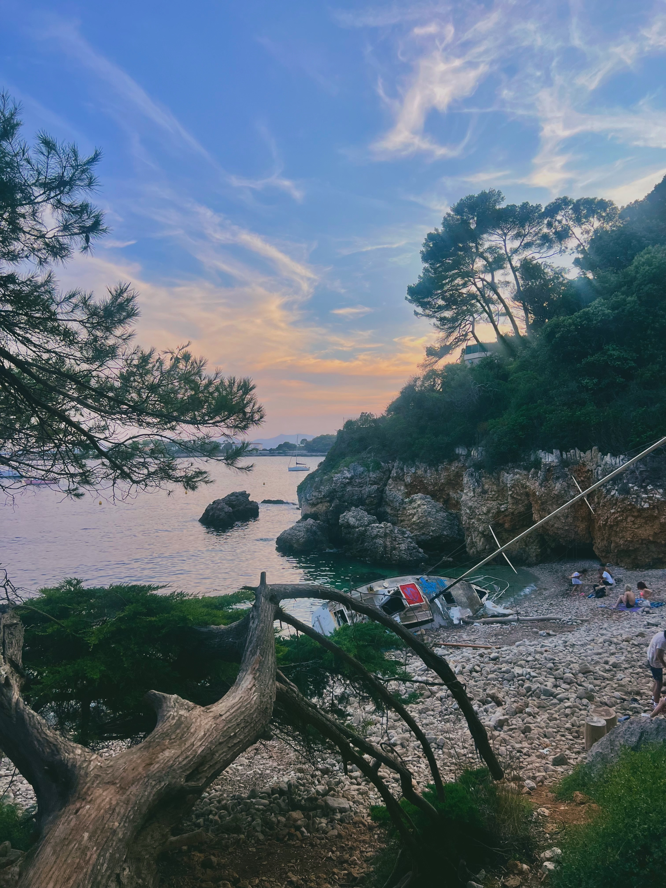
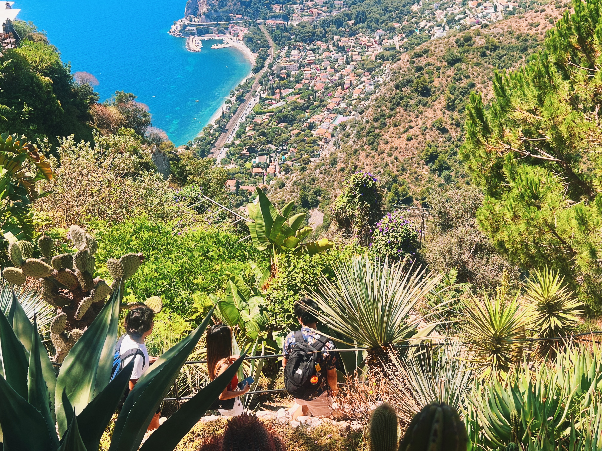

Antibes is what the French Riviera looks like when it's not trying too hard. Less polished than Cannes, less touristy than Nice, it's the coastal town that still functions as an actual place where people live. The old town has medieval walls and a daily market where locals actually shop. The harbor is full of superyachts, but you can walk past them to swim at free beaches. It's the Côte d'Azur without the pretension—mostly.
The town splits into distinct personalities: Vieil Antibes with its narrow cobblestone streets and Provençal market, Port Vauban where the billionaire yachts dock, Juan-les-Pins with its sandy beaches and nightlife, and Cap d'Antibes with its coastal path and hidden coves. You can see all of it in a day trip from Nice, or spend a few days and appreciate that Antibes has substance beyond the postcard views.
Gallery





Where to Stay
Vieil Antibes (Old Town) is the most atmospheric option—medieval streets, morning market energy, evening restaurant buzz. You're walking distance to everything that matters. The downside is noise from restaurants and bars until late. Book something with double-glazed windows or accept that you'll hear the Provençal market setting up at 6am.
Juan-les-Pins has the better beaches (actual sand instead of pebbles) and more nightlife, but feels more resort-town generic. It's younger, louder, and peaks in summer. Choose this if beaches are your priority and you want easy swimming access. A 20-minute walk or short bus ride connects you to Old Antibes.
Cap d'Antibes is where the serious money stays—Hotel du Cap-Eden-Roc and its peers. Unless you're on an unlimited budget, you're not staying here, but the coastal path is free and offers better views than the expensive hotel terraces.
Practical advice: Antibes works well as a day trip from Nice (25 minutes by train), but staying a night or two lets you experience the evening market atmosphere and sunrise walks before day-trippers arrive. The town empties out after 6pm when the tour buses leave.
Where to Eat
Marché Provençal (Cours Masséna) runs every morning except Monday and is the real reason to visit Antibes. This isn't a tourist market selling lavender sachets—locals shop here for produce, cheese, olives, and flowers. Buy picnic supplies: tapenades, fresh bread, local tomatoes, goat cheese from nearby farms. The market stalls selling socca and pissaladière are cheap and excellent. Eat breakfast here instead of a cafe.
Seafood is what you should be eating in Antibes. The fishing port still functions, so the catch is legitimate. Le Vauban near the port has fair prices for bouillabaisse and grilled fish. L'Oursin on the ramparts does sea urchin and oysters if you're feeling ambitious. Avoid the restaurants right on the port—they're tourist traps with mediocre food at premium prices.
Provençal food shows Italian influence from when this was all one region. Pizza is taken seriously here. L'Aubergine serves excellent versions in the old town. For traditional Niçois/Provençal dishes—socca, pissaladière, daube—try Chez Lulu, which locals actually frequent.
Reality check: Antibes has plenty of overpriced, underwhelming restaurants targeting cruise ship day-trippers. Avoid anywhere with photos on the menu or multilingual signs out front. The best spots are on side streets, not facing the port or main squares. If the menu isn't in French, keep walking.
What to Do
Wander Vieil Antibes. The medieval old town has 16th-century ramparts, narrow streets, and actual character. The covered market (mornings only) is worth timing your visit around. Walk the ramparts for sea views without the crowds. The Cathédrale Notre-Dame is surprisingly impressive for a town this size—12th-century Romanesque with a baroque interior.
Visit the Picasso Museum in Château Grimaldi, right on the waterfront. Picasso worked here in 1946 and left 23 paintings and 44 drawings as thanks. The collection isn't massive but it's excellent, and the setting—medieval castle overlooking the Mediterranean—is hard to beat. €8 admission, closed Mondays. Go early or late to avoid tour groups.
Gawk at Port Vauban. This is Europe's largest marina for superyachts, and the boats are genuinely absurd. Multi-deck floating palaces that cost more than most people's houses. Walk the quai des Milliardaires (Billionaire's Quay) and feel poor. It's free entertainment and oddly compelling. Best viewed with a cheap picnic from the market while sitting on the free public beach next door.
Walk the Cap d'Antibes coastal path (Sentier du Littoral). The 5km trail from Plage de la Garoupe to Plage de la Salis offers the best coastal scenery in Antibes—rocky cliffs, hidden coves, villa gardens, clear water. Parts get crowded in summer, but you can find quiet spots for swimming. Wear proper shoes; the path gets rocky and uneven. Allow 2-3 hours with swim stops.
Choose your beach. Antibes has both sand and pebble options. Juan-les-Pins has the sandy beaches and beach clubs, better for families and sunbathing. Plage de la Garoupe on Cap d'Antibes is more upscale and sheltered. Plage de la Gravette in old town is tiny but convenient and has calm water for swimming. All have free public sections—skip the expensive beach clubs unless you want loungers and service.
Day trip to Cannes or Nice. Both cities are 20-30 minutes by train. Antibes is well-positioned for exploring the coast. You get more authentic Riviera living here while still having easy access to the famous spots. Stay in Antibes, day trip to the others—not vice versa.
Juan-les-Pins vs Antibes
These are technically the same town administratively, but they feel completely different. Antibes (Vieil Antibes) is historic, charming, medieval—markets, museums, cobblestones. Juan-les-Pins is modern, beachy, resort-oriented—sandy beaches, nightclubs, beach bars. They're connected by a 20-minute coastal walk.
Choose Antibes if: You want authentic Provençal market vibes, history, better restaurants, day-trip access to Nice/Cannes, and don't mind pebble beaches. It's more sophisticated and feels less resort-town generic.
Choose Juan-les-Pins if: Sandy beaches are non-negotiable, you want nightlife and beach clubs, you're traveling with kids who need easy beach access, or you prefer a more laid-back, summery atmosphere. It's younger and livelier.
Realistically, stay in Antibes and visit Juan-les-Pins for beach days. You get the best of both without compromising on charm.
Practical Tips
Getting there: Train from Nice takes 25 minutes (€5-8), from Cannes 10 minutes (€3-5). Trains run frequently throughout the day. The Antibes train station is a 10-minute walk from the old town. You don't need a car unless you're exploring inland Provence.
When to visit: May-June and September offer ideal weather with manageable crowds. July-August are peak season—beaches packed, prices up, reservation required for decent restaurants. April and October are pleasant if you don't need swimming weather. Winter is mild but many businesses close.
How long to stay: Antibes works as a day trip from Nice (arrive morning, leave evening), but staying 2-3 days gives you time to properly explore Cap d'Antibes, enjoy the market without rushing, and swim without feeling hurried. A week is too long unless you're using it as a base for regional day trips.
Money: More affordable than Cannes or Monaco, similar to Nice. Budget €15-20 for casual meals, €35-50 for dinner with wine. The market is excellent value for picnic supplies. Beach loungers cost €15-25. Museum entry is usually under €10. Cash helps at the market and smaller restaurants.
The market schedule: Marché Provençal runs every morning except Monday (when there's a small antiques market instead). Arrive by 9am for best selection before crowds arrive. It starts closing around 1pm. This is non-negotiable must-do Antibes.
Language: French is essential. English works in tourist areas but much less than in Nice or Cannes. Basic French phrases will significantly improve your experience, especially at the market and local restaurants. Locals appreciate the effort.